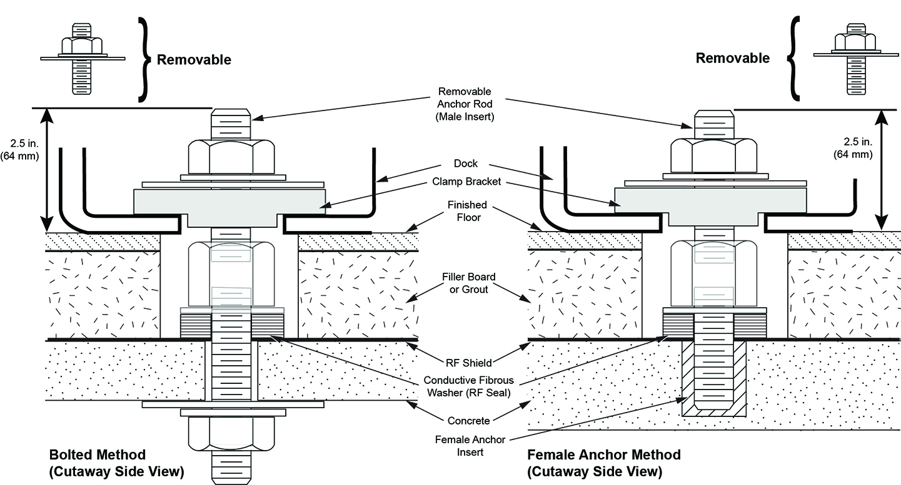
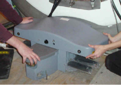
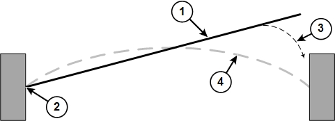

- 00000018WIA30026E20GYZ
- id_131059434.0
- Feb 14, 2020 4:05:07 PM
LCC Dock Removal and Reinstallation
Prerequisites
| Required persons | Preliminary requirements | Procedure | Finalization |
|---|---|---|---|
| 2 | Not Applicable | 1 hours | Not Applicable |
| Item | Quantity | Effectivity | Part number | Manufacturer |
|---|---|---|---|---|
| Non-magnetic Service Tool Kit | 1 | - |
5112581 | - |
| ||||||||||||
About this task
Procedure for replacement of the following dock components for 1.5T and 3.0T LCC magnets:
-
Dock limit switch board
-
Dock gear motor and clutch assembly
Removal of Dock
Procedure
Perform LOTO on the PDU. See the MR Service Safety Manual, PN 5452735:DANGER 
While applying pressure to the top of the dock, completely remove all dock attachment bolts.Warning 
Figure 2. Applying Downward Pressure to Dock 
- There are two methods for clearing the anchor stud out of the
path of the dock assembly:
- Preferred Method: If the site has followed the Pre-Installation Manual, the top portion of the stud should be removable so the dock remains flush with the floor during removal.
- If the site has an anchor stud that protrudes vertically from
the floor and cannot be removed, a nonconformance must be raised with the customer, and the anchor must be fixed to comply
with the Pre-Installation Manual prior to any future servicing of
the dock. To fix the anchor stud this time:
-
Measure the height of the anchor stud as indicated in the illustration below. If the height exceeds 2 inches (5 cm), the magnet must be ramped down prior to removing or installing the dock, because there is significant risk of the magnet attracting the dock if it needs to be raised more than 2 inches (5 cm).
Figure 3. Measuring Height of Anchor Stud 
-
Use two people to hold down the dock and slide the dock away from the magnet until the stud in the front is hitting the inner frame.
-
Use two people to lift the dock just enough to clear the top of the stud in the floor. Then pivot the dock to clear the stud.
Figure 4. Lifting Dock Enough to Clear Floor Stud 
-
Replace the dock on the floor immediately to the side of the anchor stud.
Figure 5. Replacing Dock to Side of Floor Stud 
-
- Note:When the distance between the dock and the magnet is at least equivalent to the distance between the magnet and where the foot of the patient table would normally be located, both field engineers may slowly lift the dock from the floor and exit the magnet room.It should not be extremely difficult for two FEs to pull the dock away from the magnet after all bolts are removed. If difficulty is encountered, check that the brackets are not caught against the front of the magnet.
Figure 6. Interference between Bracket and Magnet 
Replacement of Dock Limit Switch
Procedure
- Remove the dock control assembly.
Figure 7. Removal of Dock Control Assembly 
- Access the circuit board internal to the dock control assembly.
Figure 8. Removal and Replacement of Dock Limit Switch Board 
Follow the instructions in Installation of Dock to install the dock in the magnet room.Warning
Replacement of Gear Motor and Clutch Assembly
Procedure
Only proceed with removing motor and clutch assembly after removal of dock is completed in Removal of Dock.Warning - Remove the upper cover of the dock by unbolting the four hex
bolts.
Figure 9. Removing Hex Bolts from Under Dock Cover 
- Remove the four mounting screws for the motor.
Figure 11. Removing Motor Mounting Screws 
Replacement of Dock Pedal Wire Spring
Procedure
Remove the dock from the magnet room. See Removal of Dock.Warning - Remove both of the old pedal springs from the dock pedals. The
springs are held in place only by spring tension. Pull up on one end
of each spring to remove them from the pedal assemblies.
Figure 12. Dock Pedal Spring Locations 
1 Dock pedal spring 3 Dock pedal assembly without spring 2 Dock pedal assembly with spring in place 4 Pull up on spring end to remove spring
Grasp one end of the dock pedal spring. Insert the end of the spring into the hole at the end of one of the dock pedals.Notice 
Figure 13. Hole for Dock Pedal Spring 
1 Dock pedal assembly 2 Hole for dock pedal spring Figure 14. Inserting Dock Pedal Spring 
1 Dock pedal spring 2 Grasp one end of the spring and insert it into the hole at the end of one dock pedal. 3 Grasp the end of the spring approximately 1 inch (25 mm) from the end of the spring, and then gently insert the end into the hole in the other dock pedal. 4 Position of the dock pedal spring after installation - Grasp the other end of the dock pedal spring (at approximately
1 inch (25 mm) from the free end of the spring), and gently insert
it into the hole at the end of the other dock pedal. It is easier
to insert the spring into the pedal if you press down on the pedal.
Figure 15. Dock Pedal Spring Grasp Point 
Installation of Dock
Procedure
With two field engineers, one holding each side of the dock, enter the magnet room and place the dock on the floor where the foot of the patient table would normally be located.Warning - There are two methods to position the dock to clear the floor
stud:
- If the site followed the Pre-Installation Manual, it should be possible to remove the top portion of the stud when reinstalling the dock. Continue to maintain pressure on the top of the dock, while carefully sliding the dock against the base of the magnet, and reinstall the top portion of the anchor stud.
- If the site has an anchor stud that protrudes vertically from
the floor and cannot be removed, a nonconformance must be raised with the customer and the anchor must be fixed to comply
with the Pre-Installation Manual prior to any future servicing of
the dock. To fix the anchor stud this time:
Figure 16. Placement of Dock 
-
Measure the height of the anchor stud as indicated in the illustration below. If the height exceeds 2 inches (5 cm), the magnet must be ramped down prior to removing or installing the dock as there is significant risk of the magnet attracting the dock if it needs to be raised more than 2 inches (5 cm).
Figure 17. Measuring Height of Anchor Stud -
While maintaining pressure to the top of the dock, position the dock against the base of the magnet to the side of the floor stud at the front of the dock.
-
Lift the dock just enough to clear the top of the stud in the floor as shown in Figure 4.
-
While rotating the dock, align the hole at the base of the dock with the stud and place the dock down into position. (The illustration below shows the dock hole to the side of the stud, but it is placed over the anchor stud.)
-
- Tighten the nut onto the anchor stud to snug, then tighten an
additional 1/4 turn. Excessive tightening may result in the stud being
pulled from the floor.
Figure 18. Tightening Nut 
Finalization
Procedure
- Remove LOTO and restore power.
- Align and dock the table.
- Confirm that the dock motor ON switch operates properly when the Table Up pedal is pressed.